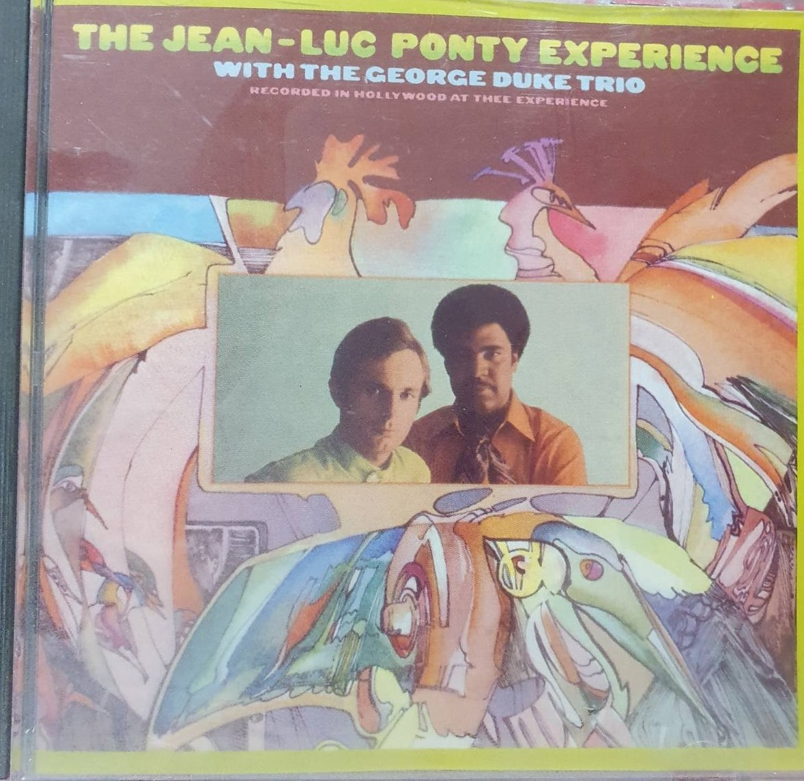
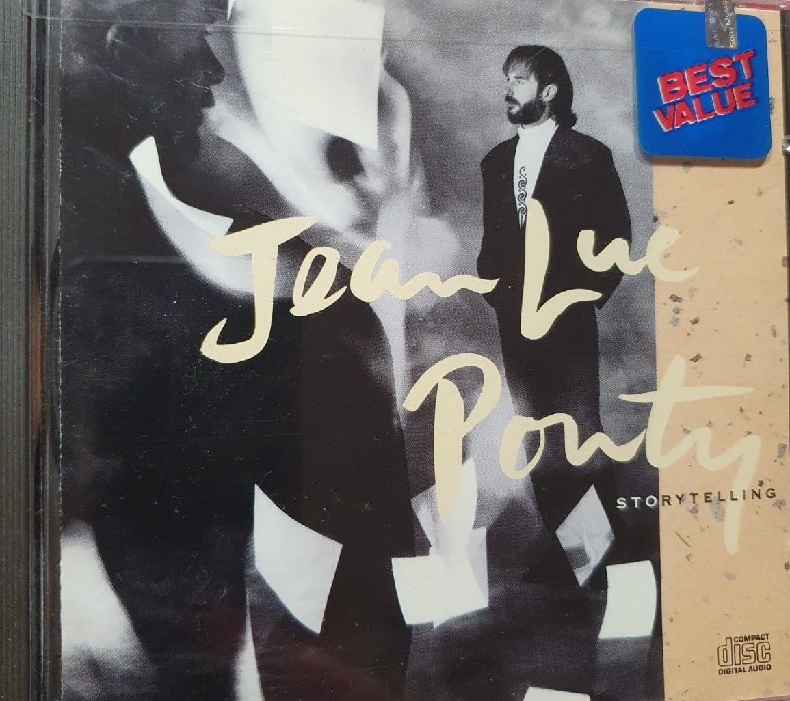
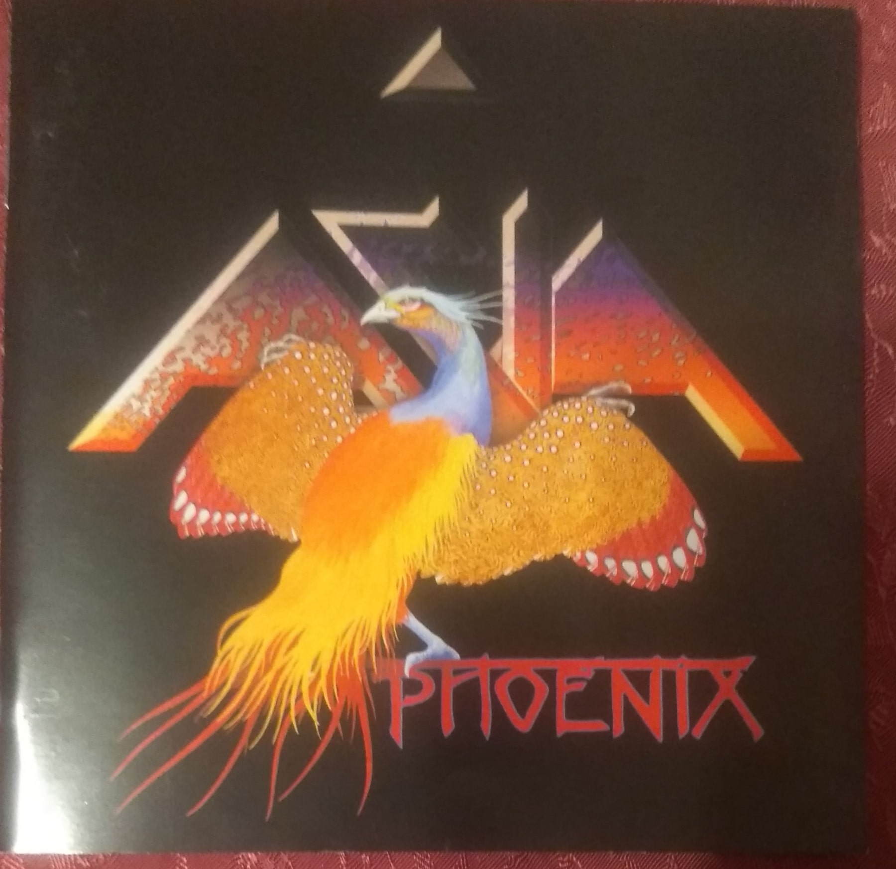
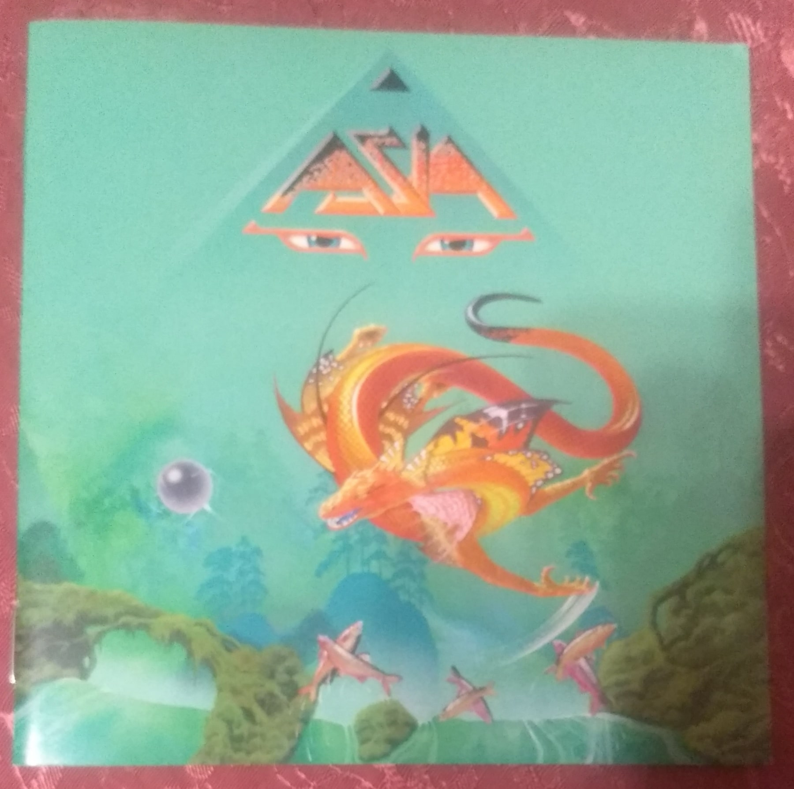
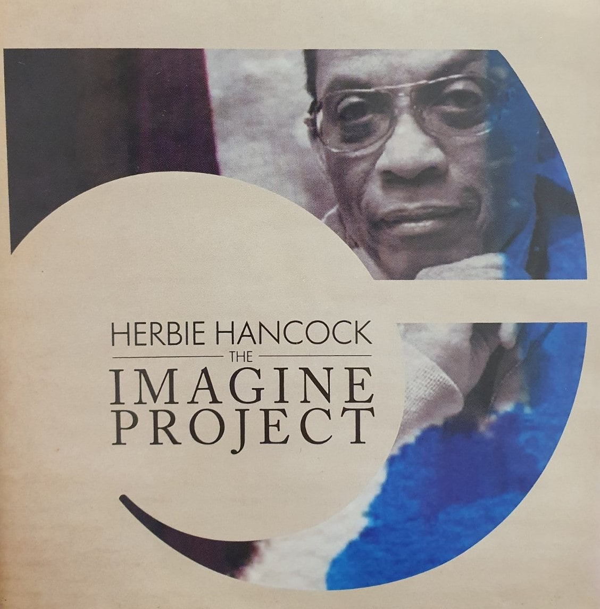
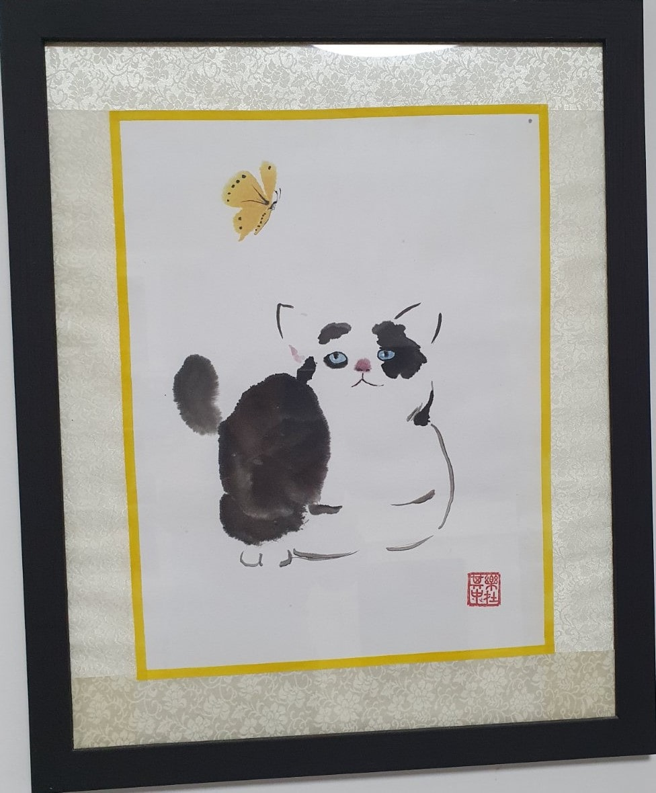

Коллекция Василевской Ирины Вячеславовны
Контактные данные
Коллекционер — это человек, собирающий редкости в надежде на то, что они станут еще более редкими.
Сигизмунд фон Радецки
| Исполнитель | Диск | Лэйбл | Стоимость | Изображение | Примечание |
|---|---|---|---|---|---|
| Jean-Luc Ponty | Individual choice | Atlantic 7 80098 - 2 |
7 USD |  |
1983, US, жанр Electronic, Jazz, Rock |
| Acatama experience | Koch KOC-CD-4233 |
16 USD |  |
2007,US, жанр Jazz | |
| Experience | One Way Records S21 17372 |
20 USD |  |
1993,US, жанр Jazz | |
| Storytelling | Columbia CK 45252 |
3,5 USD |  |
1989,US, жанр Electronic, Jazz, Rock | |
| Tchokola | Epic 468522 2 |
5,6 USD |  |
1991,Netherlands, жанр Jazz, Folk, World, & Country | |
| Asia | Phoenix | IROND CD 08-DD603 |
6,59 USD |  |
2008,Russia, жанр Rock, Pop |
| XXX | Frontiers Records FR CD 560 |
15 USD |  |
2012,Italy, жанр Rock | |
| John Fogerty | Revival | ??? ???? |
??? USD | ??? | |
| The blue ridge rangers | ??? ??? |
?? USD |  |
??? | |
| Herbie Hancock | The Imagine Project | ? ? |
? USD |  |
2010,Russia, жанр Jazz, Folk, World, & Country |
| Foxy Shazam | The Church Of Rock And Roll | I.R.S. Records 509999 41160 2 1 |
7 USD | 2012,USA, жанр Rock | |
| Kasabian | West Ryder Pauper Lunatic Asylum | Sony Music 8869 7518 312 |
2,24 USD |  |
2009,EU, жанр Electronic, Rock |
| Eagles Of Death Metal | Heart On | Downtown Music VVR886803 |
3,11 USD |  |
2008,Europe, жанр Rock |
| John Wetton | Raised In Captivity | Frontiers Records FR CD 522 |
? USD |  |
2011,Russia, жанр Rock |
| Buckcherry | All Night Long | Eleven Seven Music ESM 770 |
3,50 USD |  |
2010,US, жанр Rock |
| The Steve Miller Band | Let Your Hair Down | Space Cowboy Records RR 7718-5 |
? USD |  |
2011,Russia, жанр Rock, Blues |
| Jack White | Blunderbuss | Third Man Records 88691 95993 2 |
2,96 USD |  |
2012, USA, жанр Rock, Blues |
| Mike Oldfield | Voyager | WEA 0630-15896-2 |
2,89 USD |  |
1996,Europe, жанр Electronic, Rock |
| Bob Dylan | Modern Times | Columbia 82876 87606 2 |
2,34 USD |  |
2006,Europe, жанр Blues Rock, Folk Rock |
| Procol Harum | Exotic Birds and Fruit | ООО"Дора" JPCD9705318 |
1 USD | |
1997,Russia, жанр Rock |
| Santana | All that i am | Arista OL 0507 |
2,42 USD |  |
2005, EU, жанр Rock, Latin |
| Исполнитель | Пластинка | Стоимость | Изображение |
|---|---|---|---|
| Jan Luk Ponti | пластинка 1" | 10,45 руб |  |
| пластинка 2 | 11,47 руб | ||
| Elton Jon | пластинка 3 | 20,50 руб | |
| диск "наименование 4" | 11,47 руб |